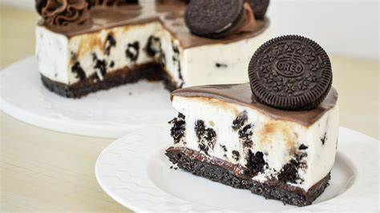
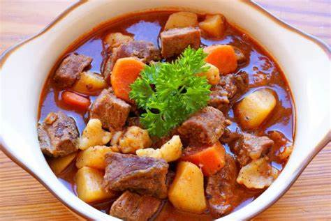

Recetario
pastel de oreo> |Gulash o Goulash húngaro> | Halászlé (sopa de pescado)
Pastel de oreo

Ingredientes
- 1 Paquete Grande de Chocolate de Oreo
- 1 1/2 Barras de Mantequilla sin Sal
- 1 1/2 Barra de Queso Crema (Cream Cheese)
- 3 Sobres de Grenetina
- 1 Taza de Azúcar Blanca (al gusto)
- 1 Cucharada de Limón
- 1/2 Taza Leche Entera
- Colocar el molde en el refrigerador de 4 hrs. a 6 hrs.
Procedimiento
- Como ya se te cometo esta receta es muy fácil de hacer, el primer paso es despegar las dos partes de la galleta, el objetivo es quitarle la crema que tiene la galleta oreo y depositar la crema en un recipiente, y colocar las galletas oreo en una licuadora para pulverizarlas.
- Una vez que tengas las galletas oreo pulverizadas añadir la mantequilla y mezclar perfectamente. Cuando tengas integrada la galleta oreo con la mantequilla depositarla en el molde y distribuir muy bien por todo el fondo del molde, cubriendo todas las ranuras del fondo, guardar un poco de galleta oreo pulverizada para decorar.
- Colocar en la licuadora la leche, el jugo del limón, la parte de la crema que se le quito a la galleta oreo, la pisca de sal, y colocarle un poco de azúcar y la mitad del queso crema.
- Integrar todo en la licuadora y batallas un poco detener la licuadora y ayudarla con una cuchara, añadir la grenetina, e integrar poco a poco el resto del queso crema.
- Con ayuda de una licuadora integrar la media leche (esto es para preparar la crema chantilly) al mismo tiempo integrar poco a poco el resto de la azúcar por un tiempo de 5 minutos. Luego incorporar el batido anterior con este nuevo hacerlo lentamente con una espátula en forma de envolvimiento.
- Vaciar esta mezcla en el molde que contenga la masa de la galleta oreo, colocar este molde en el refrigerador y posteriormente desmontarlo y hacer una pequeña decoración con el polvo de galleta oreo y galleta oreo entera.
Gulash o Goulash húngaro.

Ingredientes
- 1 kg. de carne de ternera troceada para guiso
- 4 dientes de ajo y 3 zanahorias
- 2 cebollas grande o cebolletas
- 1 puerro entero grande
- 4 tomates grandes
- 1 ramita de perejil fresco
- 1 cucharada de comino en polvo
- 1 cucharada sopera rasa de paprika o pimentón dulce (podéis usar la mayor parte dulce y un pelín de picante)
- 2 hoja de laurel
- 1 pimiento rojo grande
- Pimiento paprika rojo o si no lo encontráis, un poco de chile picante o cayena (si no habéis echado pimentón picante)
- Harina para emborrizar la carne
- 1 litro de vino tinto Mencía (Ribeira Sacra)
- Pimienta negra recién molida y sal (al gusto)
- 100 ml. de aceite de oliva virgen extra
Preparacion
- A la hora de comprar la carne pedidle al carnicero que os la corte a trozos regulares para guiso y que os la limpie, que le quite la grasa sobrante. Os quedarán unos trozos de 20 g más o menos. Si compramos la carne entera para guisar os recomiendo cortarla en casa en trozos de 2-3 cm, no os olvidéis de repasar y limpiar los posibles restos de grasa, ternillas y huesecillos.
- Salpimentamos la carne y pasamos por harina. Una vez enharinada y sacudida, la freiremos en la cazuela donde vamos a preparar el estofado. Calentamos el aceite de oliva virgen extra en una cazuela, echamos la carne y marcamos los trozos hasta que queden bien dorados, soltará parte de su jugo. Retiramos la carne y reservamos. En el aceite que hemos usado para la marcar la carne quedarán restos de la harina, nos servirá para espesar la salsa en la futura cocción del estofado.z
- Pelamos los ajos, la cebolla y el puerro, y picamos muy finamente. Sofreímos todos los vegetales en el mismo aceite donde hemos dorado la carne durante unos 10 minutos a fuego lento.
- Cuando el sofrito esté bien dorado añadimos una buena cucharada de paprika. Este es el secreto de un excelente Gulash húngaro, la calidad del pimentón, aunque si no es húngaro podemos usar pimentón de la Vera, que tiene un toque ahumado delicioso. Removemos todo bien a temperatura baja para que no se nos queme.
- Pelamos las zanahorias y lavamos el pimiento rojo. Cortamos en rodajas lo más finas posibles las zanahorias (así se harán mucho antes en nuestro guiso) y el pimiento en daditos muy pequeños. Los tomates los cortamos a la mitad y rallamos hasta que nos quede sólo la pulpa del mismo. Añadimos estos ingredientes al sofrito anterior y removemos todo bien con una cuchara de madera mezclando los sabores.
- Troceamos el perejil fresco lo más picadito posible. Añadimos una cucharada de comino en polvo (opcional, a mi me encanta el toque de esta especia), el perejil y los pimientos húngaros (si no los encontráis sustituidlos por chile o cayenas, siempre que os guste el toque picante que le da al estofado). Removemos todo con suavidad para juntar los sabores.
- Añadimos los trozos de carne que tenemos reservados y echamos un vaso de vino tinto, en mi caso un buen mencía de la Ribeira Sacra para darle potencia al sabor del estofado y un color impresionante.
- Añadimos las hojas de laurel y rectificamos sal y pimienta. Dejamos que reduzca un poco, aproximadamente unos 10-15 minutos a fuego medio.
- Cubrimos todo con el resto del vino y si queréis el estofado un poco más suave, podéis sustituir parte del vino por caldo de carne o un poco de agua.
- Guisamos a fuego lento hasta que reduzca el líquido y la carne esté tierna, aproximadamente unas 2 horas. Es importante que remováis de vez en cuando para que no se pegue al fondo de la cazuela. Si lo preparáis el día antes lo mejor para calentarlo es usar la misma cazuela a fuego muy lento moviendo de vez en cuando.
- Servimos el gulash húngaro bien caliente con un poco de perejil picado por encima, acompañado de pan, pues la salsa de esta receta es grandiosa. Si te gusta más caldoso, aumenta la cantidad de caldo del guiso y tómalo como sopa.
- Opcionalmente (a mi no me gusta mucho), puedes añadirle un poco de nata agria al servir, que es la manera tradicional y como lo toman en Hungría. Hay quien añade nata líquida directamente a la salsa, para espesarla, pero no es lo tradicional. Puedes encontrar variantes donde no se añade tomate y muy poco paprika, pero desde que los españoles llevaron al imperio austro-húngaro el tomate y el pimentón, ya nadie se imagina este plato sin ese peculiar sabor, lo que ellos llaman “tomatenpaprika”.
Halászlé (sopa de pescado)
Ingredientes
- 500 gramos de carpa lucio y lucioperca
- 5 cebollas peladas y cortadas en rodajas
- Sal al gusto
- 2 cucharadas de paprika dulce
- 1 cucharada de paprika rosa
Procedimiento
- Desescamar, destripar y lavar el pescado.
- Cortar en trozos de 3 centímetros.
- En una cacerola grande poner los tres tipos de pescado por capas, separando cada capa con cebolla, concluir con una capa de pescado.
- Verter agua de manera que ésta cubra todo el contenido de la cacerola, sazonar y llevar a ebullición.
- A continuación espolvorear con las dos clases de pimentón.
- Dejar cocer unos 60 minutos, agitando de vez en cuando la cacerola, con cuidado, para que los trozos de pescado queden enteros.
- Servir la sopa presentando la cacerola en la mesa.